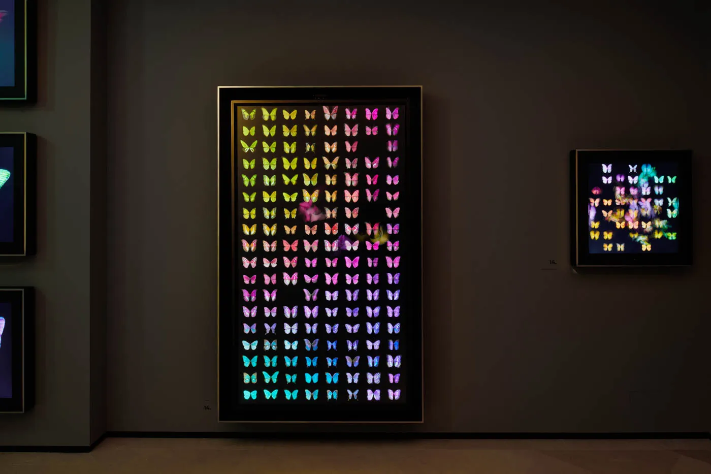
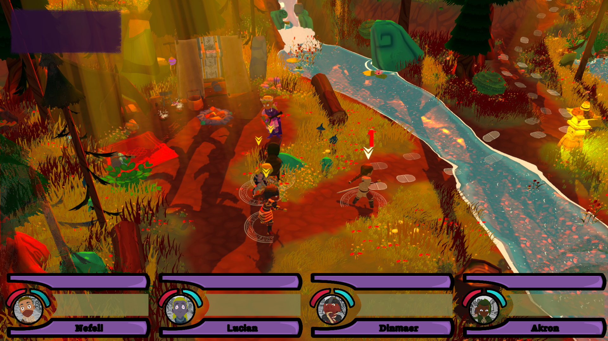

Interactive engine systems
Unity and Unreal Engine applications built with C#, Blueprints, Niagara, materials and real-time rendering systems.
London, UK
I build and ship interactive experiences across Unity and Unreal Engine—from live installations to interactive applications.
Profile
I'm a Creative Developer at Dominic Harris Studio with more than four years of professional Unity and Unreal Engine experience. My work spans interactive applications, real-time graphics, sensor-led systems, technical R&D, deployment tooling and the long-term operation of installed artworks.
My work has been exhibited internationally, including at Halcyon Gallery locations in London, New York and Washington. I move between feature development, profiling, systems integration, platform support and live technical problem-solving—building reliable software for both creative concepts and the hardware that runs them.
Technical showcase
Master’s major project, Falmouth University. A Unity 2021.3 project exploring procedural terrain-chunk generation with Perlin noise and material-aware placement of vegetation, forests, points of interest and story-progress items.
View source on GitHub →Unseen
Blueprint and Python systems, asset streaming, colour services and exhibition delivery for an Unreal Engine artwork.
Explore contribution →59″ Metamorphosis collection
Maintained 60 FPS across the collection, with 11 ms game-thread and 9 ms GPU-thread times.
Explore optimisation work →Installed artwork operations
PowerShell tooling, monitoring, remote diagnosis and live technical support for deployed interactive systems.
View experience →Technical focus
Unity and Unreal Engine applications built with C#, Blueprints, Niagara, materials and real-time rendering systems.
GPU and CPU profiling, memory optimisation, asset streaming, LODs, animation cost, draw calls and rendering scalability.
Gesture and skeleton tracking, camera and sensor input, projection workflows, networked systems and multi-display experiences.
Rapid prototyping and technical investigation—from procedural real-time artwork and generative systems to new interaction approaches.
Windows, Linux/AArch64 and NVIDIA Jetson deployment, plus WebGL and mobile delivery where a project requires it.
PowerShell support tooling, fleet updates, Zabbix monitoring, remote maintenance and live client troubleshooting for installed artworks.
Selected work

Unreal Engine systems work spanning Blueprints, Python tooling, asset streaming, colour services and exhibition deployment.
Read case study →
UE5 development for a multi-display interactive installation, covering real-time input, networked presentation and delivery.
View contributions →
Unity technical-art and programming work: lighting, VFX, C# gameplay systems, UI and post-processing optimisation.
View contributions →Get in touch